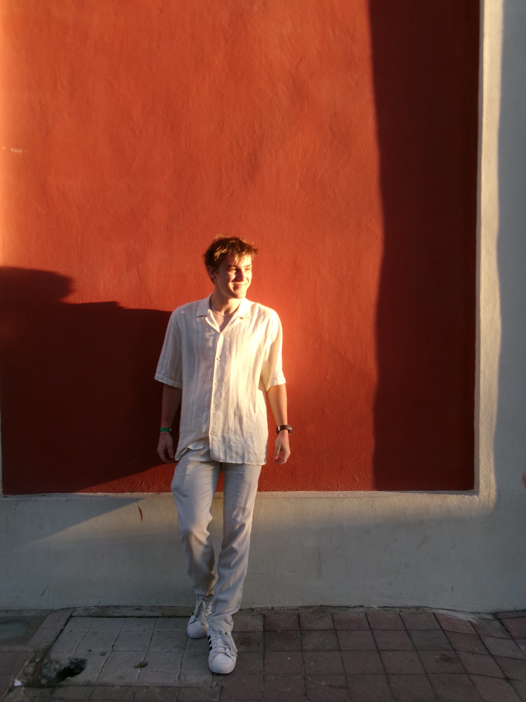

Hi! I'm Nick, a second-year Engineering Physics student at the University of British Columbia.
I developed my passion for math and science from a young age, and my room growing up was always
full of model Space Shuttles and various projects. Since joining engineering, I have relished
the opportunity to apply my skills to tackle real world problems and work with peers who share
my interests.
Outside of school, I love to travel and cook, and you'll frequently find me on the golf course. I am also an avid cinephile, writing Letterboxd reviews and volunteering at the Vancouver International Film Festival. In fact, I used my only arts elective to take a Japanese Cinema course last year, and I am a massive fan of the directors Akira Kurosawa, Edward Yang, and Damien Chazelle. Despite living in the Vancouver area my entire life, I am actually a dual citizen, and half of my family lives in a tiny town in Illinois right on the Mississippi river.
I love to be around people and am excited to explore my next opportunity this coming winter. If you are interested in any of my projects or just want to make a new connection in engineering, please feel free to reach out!
Outside of school, I love to travel and cook, and you'll frequently find me on the golf course. I am also an avid cinephile, writing Letterboxd reviews and volunteering at the Vancouver International Film Festival. In fact, I used my only arts elective to take a Japanese Cinema course last year, and I am a massive fan of the directors Akira Kurosawa, Edward Yang, and Damien Chazelle. Despite living in the Vancouver area my entire life, I am actually a dual citizen, and half of my family lives in a tiny town in Illinois right on the Mississippi river.
I love to be around people and am excited to explore my next opportunity this coming winter. If you are interested in any of my projects or just want to make a new connection in engineering, please feel free to reach out!

Contact
Get in touch
- nick-schutts
- GitHub
- nschutts
- Phone
- (604)-753-7214